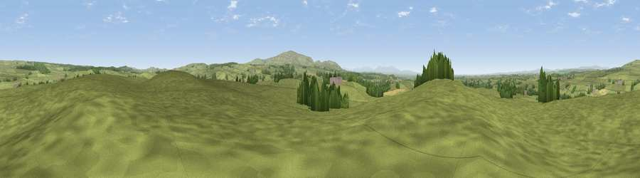

Viewpoint near Low Row
#12610 in England · top 32% of its area beats it · near Low RowWhere it is
The exact computed spot (NY 57525 66025). Click the marker for map links.
The view, rendered

A 360° render of this exact spot computed from the terrain model, tree cover and land cover — summer colours, afternoon light, calibrated against photographs of famous viewpoints. Real trees, hedges and buildings will differ in detail.
The panorama
Grey silhouette: terrain skyline in each direction (720 bearings, Earth curvature and refraction included). Dashed green: skyline with trees (+15 m) and buildings (+8 m) as obstacles. Blue strip: how far the ground is visible on each bearing.
Where the view opens
Wedge length = distance to the farthest visible ground on that bearing (vegetation-aware). Rings at 10, 25 and 50 km.
What fills the view
93% grassland · 5% woodland · 1% cropland
Angular shares of the visible panorama (visual magnitude), not map area. Landscape diversity 0.14 (0–1 Shannon).
Key numbers
More beautiful places nearby
The staircase of upgrades: each row has a higher view potential than everything closer. Driving times are estimates from straight-line distance, calibrated against real road routing — check an actual route before setting out.
| Place | Direction | Drive | Score |
|---|---|---|---|
| Viewpoint near Low Row | WSW · 1 km | ~3 min | 62.5 |
| Viewpoint near Low Row | SE · 4 km | ~9 min | 67.5 |
| Viewpoint near Bewcastle | N · 6 km | ~12 min | 73.2 |
| Whinny Fell | S · 9 km | ~17 min | 74.2 |
| Viewpoint near Farlam | S · 10 km | ~19 min | 76.5 |
| Viewpoint near Castle Carrock | S · 12 km | ~22 min | 76.9 |
| Viewpoint near Bewcastle | N · 13 km | ~24 min | 78.9 |
| Viewpoint c11644_7156 | N · 16 km | ~29 min | 80.8 |
54.98700, -2.66530 · source: screening · position refined by local search. Computed location — check access rights before visiting.